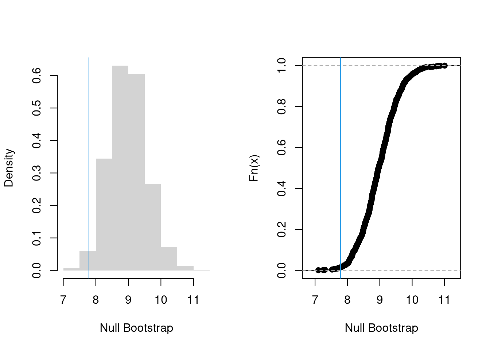
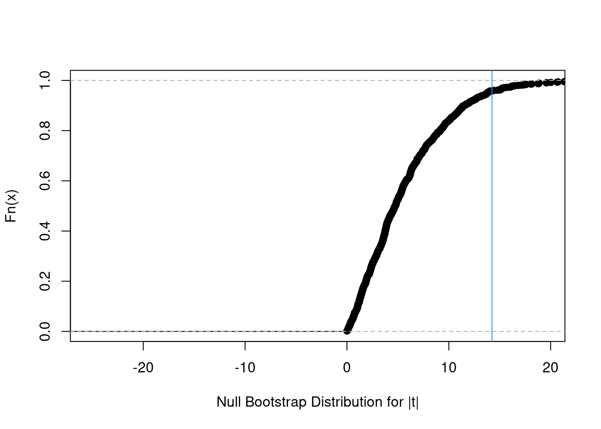
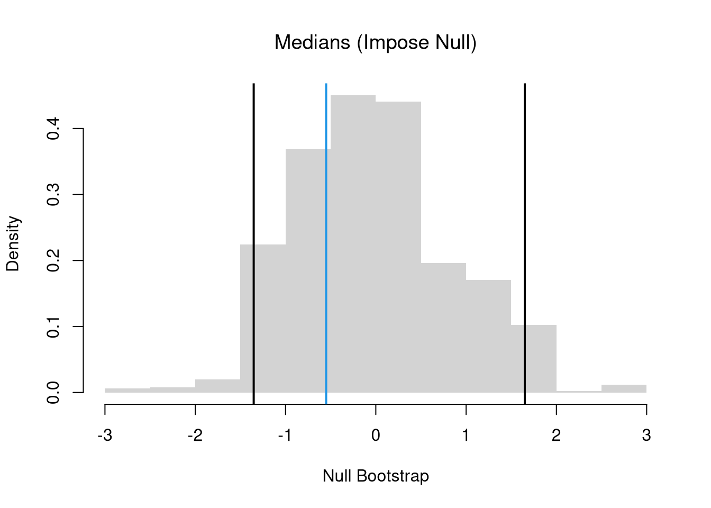

In this section, we test hypotheses using data-driven methods that assume much less about the data generating process. There are two main ways to conduct a hypothesis test to do so: inverting a confidence interval and imposing the null. The first treats the distribution of estimates directly; the second explicitly enforces the null hypothesis to evaluate how unusual the observed statistic is. Both approaches rely on the bootstrap: resampling the data to approximate sampling variability. The most typical case is hypothesizing about about the mean, and the bootstrap idea here is to approximate \(M-\mu\), the difference between the sample mean \(M\) and the unknown theoretical mean \(\mu\), with the difference between the bootstrap mean \(M^{\text{boot}}\) and the sample mean, \(M^{\text{boot}}-M\).
Invert a CI.
One main way to conduct hypothesis tests is to examine whether a confidence interval contains a hypothesized value. We then use this decision rule
reject the null if value falls outside of the interval
fail to reject the null if value falls inside of the interval
We typically use a 95% confidence interval to create a rejection region.
E.g., suppose you hypothesize the mean is \(9\). You then construct a bootstrap distribution with \(95\%\) confidence interval, and find your hypothesized value falls outside of the confidence interval. Then, after accounting for sampling variability (which you estimate), it still seems extremely unlikely that the theoretical mean actually equals \(9\), so you reject that that hypothesis. (If the theoretical value landed in the interval, you would “fail to reject” the theoretical mean equals \(9\).)
We can also compute a null distribution: the sampling distribution of the statistic under the null hypothesis (assuming your null hypothesis was true). We use the bootstrap to loop through a large number of “resamples”. In each iteration of the loop, we impose the null hypothesis and re-estimate the statistic of interest. We then calculate the range of the statistic across all resamples and compare how extreme the original value we observed is.
E.g., suppose you hypothesize the mean is \(9\). You then construct a 95% confidence interval around the null bootstrap distribution (resamples centered around \(9\)). If your sample mean falls outside of that interval, then even after accounting for sampling variability (which you estimate), it seems extremely unlikely that the theoretical mean actually equals \(9\), so you reject that that hypothesis. (If the sample mean landed in the interval, you would “fail to reject” the theoretical mean equals \(9\).)
Code
sample_dat <- USArrests[,'Murder']sample_mean <-mean(sample_dat)# Bootstrap NULL: mean=9# Bootstrap shift: center each bootstrap resample so that the distribution satisfies the null hypothesis on average.set.seed(1)mu <-9bootstrap_means_null <-vector(length=999)for(b inseq_along(bootstrap_means_null)){ dat_b <-sample(sample_dat, replace=T) mean_b <-mean(dat_b) + (mu - sample_mean) # impose the null via Bootstrap shift bootstrap_means_null[b] <- mean_b}hist(bootstrap_means_null, breaks=25, border=NA,main='',xlab='Null Bootstrap Samples')ci_95 <-quantile(bootstrap_means_null, probs=c(.025, .975)) # critical regionabline(v=ci_95, lwd=2)abline(v=sample_mean, lwd=2, col=4)
7.2 p-values
A p-value is the frequency you see something as extreme as your statistic when sampling from the null distribution. There are three tests associated with p-values: the two-sided test (observed statistic is either extremely high or low) or one of the one-sided tests (observed statistic is extremely low, observed statistic is extremely high).
For a concrete example, consider whether the mean statistic, \(M\), is centered on a theoretical value of \(\mu=9\) for the population. If your null hypothesis is that the theoretical mean is eight, \(H_{0}: \mu =9\), and you calculated the mean for your sample as \(\hat{M}\), then you can consider any one of these three alternative hypotheses:
\(H_{A}: \mu > 9\), a right-tail test, \(Prob( M > \hat{M} \mid \mu = 9 )\).
\(H_{A}: \mu < 9\), a left-tail test, \(Prob( M < \hat{M} \mid \mu = 9 )\).
\(H_{A}: \mu \neq 9\), a two-tail test, depicted in the previous section.
A one-sided test is straightforward to implement via a bootstrap null distribution. For a left-tail test, we examine \[\begin{eqnarray}
Prob( M < \hat{M} \mid \mu = 9 )
&\approx& Prob( M^{\text{boot}} < \hat{M} \mid \mu^{\text{boot}} = 9 ) = \hat{F}^{\text{boot}}_{0}(\hat{M}),
\end{eqnarray}\] where \(\hat{F}^{\text{boot}}_{0}\) is the ECDF of the bootstrap null distribution. For a right-tail test, we examine \(Prob( M > \hat{M} \mid \mu = 9 ) \approx 1-\hat{F}^{\text{boot}}_{0}(\hat{M})\).
Code
# One-Sided Test, ALTERNATIVE: mean > 9par(mfrow=c(1,2))# Visualize One Sided Prob. & reject region boundaryhist(bootstrap_means_null, border=NA,freq=F, main=NA, xlab='Null Bootstrap')abline(v=sample_mean, col=4)# Equivalent VisualizationFhat0 <-ecdf(bootstrap_means_null) # Look at right tailplot(Fhat0,main='',xlab='Null Bootstrap')abline(v=sample_mean, col=4)

Code
# Numerically Compute Two Sided Probabilityp1 <-1-Fhat0(sample_mean) #Compute right Tailp1## [1] 0.986987
A two sided test is slightly more complicated to compute. We want the probability mass in both tails, for the random variable \(M\) that is at least as far from the null mean of \(9\) as our observed sample mean \(\hat{M}\). \[\begin{eqnarray}
Prob( |M - \mu| \geq |\hat{M} - \mu| \mid \mu = 9 )
&\approx& Prob( |M^{\text{boot}}- \mu^{\text{boot}}| \geq |\hat{M}- \mu^{\text{boot}}| \mid \mu^{\text{boot}} = 9) \\
&=& 1-\hat{F}^{|\text{boot}|}_{0}(|\hat{M}-9|),
\end{eqnarray}\] where \(\hat{F}^{|\text{boot}|}_{0}\) is the ECDF of \(|M^{\text{boot}}- \mu^{\text{boot}}|\).
Code
# Two-Sided Test, ALTERNATIVE: mean < 9 or mean >9mu <-9# Visualize Two Sided Prob. & reject region boundarypar(mfrow=c(1,2))hist(abs(bootstrap_means_null-mu),freq=F, breaks=20,border=NA, main='', xlab='Null Bootstrap')abline(v=abs(sample_mean-mu), col=4)# Equivalent VisualizationFhat_abs0 <-ecdf( abs(bootstrap_means_null-mu) )plot(Fhat_abs0,main='',xlab='Null Bootstrap')abline(v=abs(sample_mean-mu), col=4)
Often, one may see or hear “p<.05: statistically significant” and “p>.05: not statistically significant”. That is decision making on purely statistical grounds, and it may or may not be suitable for your context. You simply need to know that whoever says those things is using \(5\%\) as a critical value to reject an alternative hypothesis.
Code
# Purely-Statistical Decision Making Examples.# One Sided Testif(p1 >.05){print('fail to reject the null that sample_mean=9, at the 5% level')} else {print('reject the null that sample_mean=9 in favor of >9, at the 5% level')}## [1] "fail to reject the null that sample_mean=9, at the 5% level"# Two Sided Testif(p2 >.05){print('fail to reject the null that sample_mean=9, at the 5% level')} else {print('reject the null that sample_mean=9 in favor of either <9 or >9, at the 5% level')}## [1] "reject the null that sample_mean=9 in favor of either <9 or >9, at the 5% level"
Beware that a common misreading of the p-value as “the probability the null is true”. That is false.
Caveat.
Also note that the p-value is itself a function of data, and hence a random variable that changes from sample to sample. Given that the \(5\%\) level is somewhat arbitrary, and that the p-value both varies from sample to sample and is often misunderstood, it makes sense to give p-values a limited role in decision making.
A t-value standardizes the approach for hypothesis tests of the mean. For any specific sample, we compute the estimate \[\begin{eqnarray}
\hat{t}=(\hat{M}-\mu)/\hat{S},
\end{eqnarray}\] which corresponds to the estimator \(t = (M - \mu) / \mathbb{s}(M)\), which varies from sample to sample.
uses the same statistic for different hypothesis tests
makes the statistic comparable across different studies
removes dependence on unknown parameters by normalizing with a standard error
makes the null distribution theoretically known asymptotically (approximately)
For the first point, notice that the recentering adjustment affects two-sided tests (because they depend on distance from the null mean) but not one-sided tests (because adding a constant does not change rank order).
Code
set.seed(1)bootstrap_means_null <-vector(length=999)for(b inseq_along(bootstrap_means_null)){ dat_b <-sample(sample_dat, replace=T) mean_b <-mean(dat_b) + (mu - sample_mean) # impose the null bootstrap_means_null[b] <- mean_b}# See that the "recentering" matters for two-sided testsecdf( abs(bootstrap_means_null-mu) )( abs(sample_mean-mu) )## [1] 0.966967ecdf( abs(bootstrap_means_null) )( abs(sample_mean) )## [1] 0.01301301# See that the "recentering" doesn't matter for one-sided onesecdf( bootstrap_means_null-mu)( sample_mean-mu)## [1] 0.01301301ecdf( bootstrap_means_null )( sample_mean)## [1] 0.01301301
The last point implies we are typically dealing with a normal distribution that is well-studied, or another well-studied distribution derived from it.1
Code
# Boostrap Null Distributionbootstrap_t_null <-vector(length=999)for(b inseq_along(bootstrap_t_null)){ dat_b <-sample(sample_dat, replace=T) mean_b <-mean(dat_b) + (mu - sample_mean) # impose the null by recentering# Compute t-stat using jackknife ses (same as above) jackknife_means_b <-vector(length=length(dat_b))for(i inseq_along(jackknife_means_b)){ jackknife_means_b[i] <-mean(dat_b[-i]) } jackknife_se_b <-sd( jackknife_means_b ) jackknife_t_b <- (mean_b - mu)/jackknife_se_b bootstrap_t_null[b] <- jackknife_t_b}# Two Sided TestFhat0 <-ecdf(abs(bootstrap_t_null))plot(Fhat0, xlim=range(bootstrap_t_null, sample_t),xlab='Null Bootstrap Distribution for |t|',main='')abline(v=abs(sample_t), col=4)

Code
p <-1-Fhat0( abs(sample_t) ) p## [1] 0.04204204
Quantiles and Shape Statistics.
Bootstrap allows hypothesis tests for any statistic, not just the mean, without relying on parametric theory. For example, the above procedures generalize from differences in means to statistics like medians and other quantiles.
Code
# Test for Median Differences (Impose the Null)# Bootstrap Null Distribution for the median# Each Bootstrap shifts medians so that median = q_nullq_obs <-quantile(sample_dat, probs=.5)q_null <-7.8bootstrap_quantile_null <-vector(length=999)for(b inseq_along(bootstrap_quantile_null)){ x_b <-sample(sample_dat, replace=T) #bootstrap sample q_b <-quantile(x_b, probs=.5) # median d_b <- q_b - (q_obs-q_null) #impose the null bootstrap_quantile_null[b] <- d_b }# 2-Sided Test for Median Differencehist(bootstrap_quantile_null-q_null, border=NA, freq=F, xlab='Null Bootstrap',font.main=1, main='Medians (Impose Null)')median_ci <-quantile(bootstrap_quantile_null-q_null, probs=c(.025, .975))abline(v=median_ci, lwd=2)abline(v=q_obs-q_null, lwd=2, col=4)

Code
# 2-Sided Test for Median Difference## Null: No Median Difference1-ecdf( abs(bootstrap_quantile_null-q_null))( abs(q_obs-q_null) ) ## [1] 0.5485485
The above procedure generalizes to differences in many other statistics. Perhaps the most informative are differences in shape. E.g., you can test for differences in spread, skew, or kurtosis.
In another statistics class, you will learn the math behind the null t-distribution. In this class, we skip this because we can simply bootstrap the t-statistic too.↩︎